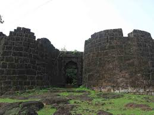
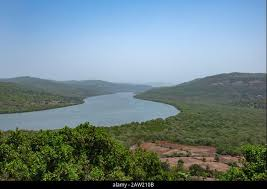
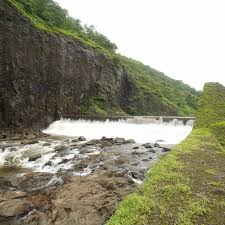
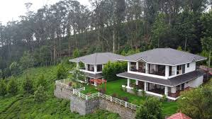
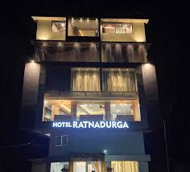

Mandangad is a historic hill town in Ratnagiri district, known for its forts, rivers, temples, and natural scenery.

An ancient hill fort with ruins, historical tanks and a Ganapati temple.

The scenic Savitri River flows through the region offering lush landscapes.

A peaceful picnic spot by the Savitri River with scenic views.

rating: 4.3 | Serene rural resort.

rating: 4.0 | Comfortable mid-range hotel.